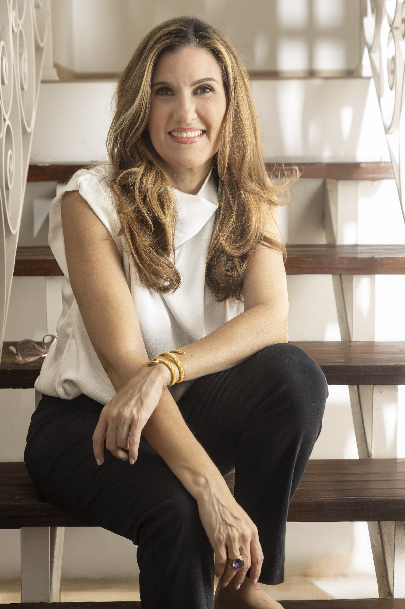
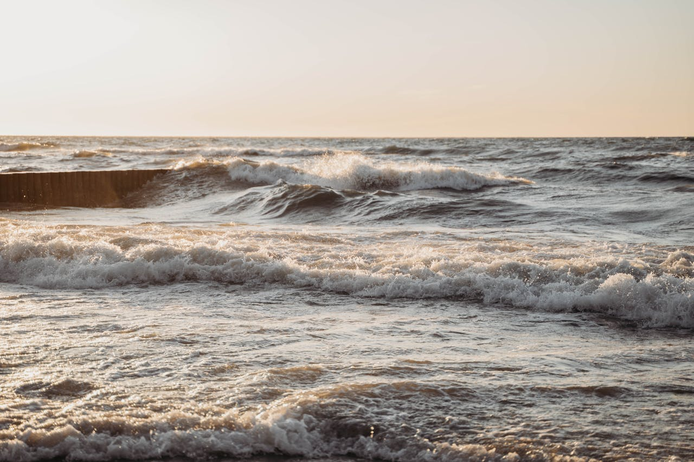
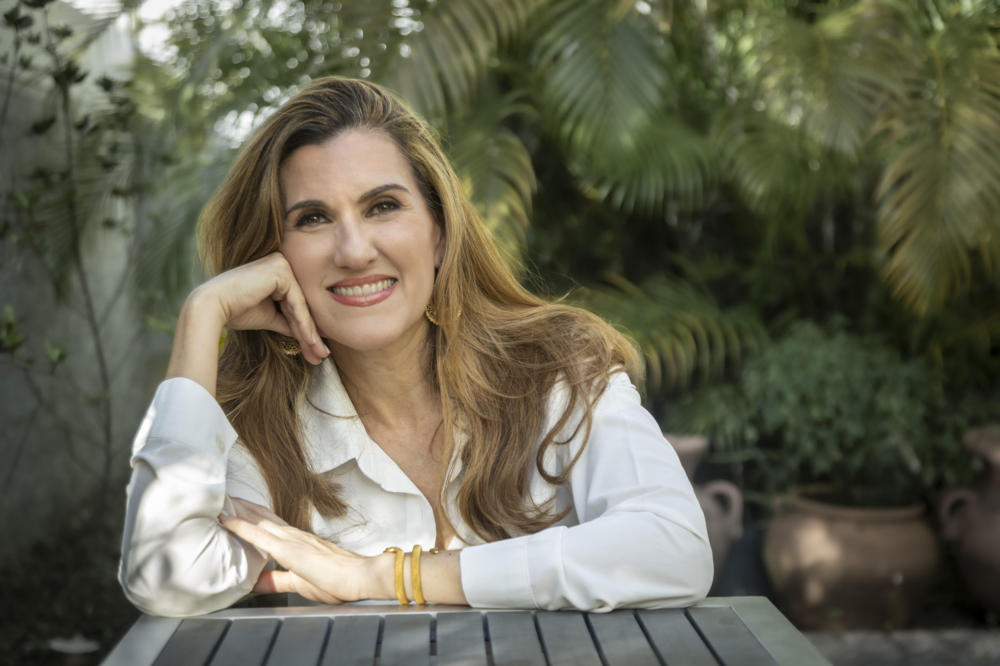

SOBRE MÍ
ABOUT ME
Marisol Pérez Casas, PhD
Marisol Pérez-Casas, PhD
Astróloga, Lingüista, Editora
Astrologer, Linguist, Editor
A los 18 años leí el libro "Astrología para todos" de Alan Leo y quedé enamorada del tema. Antes de estudiar astrología de manera formal, completé cuatro grados académicos, entre ellos un doctorado en lingüística en la Universidad de Georgetown, en Washington, D.C., Estados Unidos. Durante muchos años me dediqué a la investigación académica, la docencia y la edición de textos.
Al igual que en mi formación académica, me acerco a la astrología con estudio riguroso y dedicación. Comencé a formarme con Heather Eland en Estados Unidos y luego con Eugenio Carutti en Casa XI, en Argentina. Hoy sigo estudiando, porque el aprendizaje de la astrología nunca termina: es tan vasto como los siglos que ha existido en la Tierra.
Dane Rudhyar, un destacado astrólogo, afirmó: "La astrología es un lenguaje. Si entiendes este lenguaje, el cielo te habla". No sabía que la astrología tenía tanto que decirme. Mi formación como lingüista me mostró que conocer un idioma puede abrir toda una nueva perspectiva sobre el mundo. Pero, para mi sorpresa, el mundo que descubrí estaba dentro de mí.
I fell in love with astrology at 18 when I read my first book on the topic, "Astrology for All" by Alan Leo. Before formally studying astrology, I completed four academic degrees, including a PhD in Linguistics from Georgetown University in Washington, DC, USA. For many years, I dedicated myself to academic research, teaching, and text editing.
Just like my academic training, I approach astrology with rigorous study and dedication. I first studied with Heather Eland in the United States and later with Eugenio Carutti at Casa XI in Argentina. Today I continue studying, because learning astrology never ends—it's as vast as the centuries it has existed on Earth.
Dane Rudhyar, a famous astrologer, once said: "Astrology is a language. If you understand this language, the sky speaks to you." I didn't know that astrology had so much to say to me. My background as a linguist showed me that knowing a language can open up a whole new perspective on the world. But to my amazement, the world I discovered was inside myself.


Una nueva perspectiva
En una de mis primeras clases con Eugenio Carutti, él nos preguntó: "¿Para qué aprender astrología si no vas a dejar que te transforme?" No tenía idea de lo que quería decir. Hasta que sucedió. Aprender el lenguaje de la astrología me transformó. No soy la misma persona que era antes de aprender este idioma.
La astrología es mucho más que un horóscopo en el periódico; es un camino de autoconocimiento. No hay tal cosa como “creer en la astrología”, del mismo modo que no hay tal cosa como “creer en el francés”. La astrología es un lenguaje que cuenta la historia de tu potencial y te da la posibilidad de reescribir algunas partes de esa historia, para que tu vida sea una expresión más armoniosa y flexible de tu composición única.
A New Perspective
"Why learn astrology if you will not let it transform you?" asked Eugenio Carutti in one of the first classes I took with him. I had no idea what he meant—until it happened. Learning the language of astrology transformed me. I am not the same person I was before I became fluent in this language.
Astrology is more than a horoscope in a newspaper; it is a path of self knowledge. There is no such thing as “believing in astrology” as there is no such thing as “believing in French.” Astrology is a language that tells the story of your potential and gives you the ability to rewrite some parts of that story, so that your life can become a more harmonious and flexible display of your unique makeup.
Algunos datos sobre mí
- Sonidos que me encantan: escribir en un teclado, las olas del mar y los truenos.
- Amo a Shakespeare. Leí Hamlet tres veces cuando era adolescente. En Julius Caesar escribió: “No está en las estrellas nuestro destino, sino en nosotros mismos”. Estoy de acuerdo con él, hasta cierto punto…
- Tengo tres ciudadanías: España, México y Estados Unidos.
- Soy Sol en Tauro y Ascendente en Capricornio. Mi Luna en Piscis está en el mismo grado que una de las astrólogas que más admiro.
A Few Facts About Me
- Sounds that I love: typing on a keyboard, ocean waves, and thunder.
- I love Shakespeare. I read Hamlet three times as a teenager. In Julius Caesar he wrote, “It is not in the stars to hold our destiny, but in ourselves.” I agree with him, up to a point…
- I have three citizenships: Spain, Mexico, and the United States.
- I am a Taurus Sun and Capricorn rising. My Pisces Moon is in the same degree as one of the astrologers I most admire.
